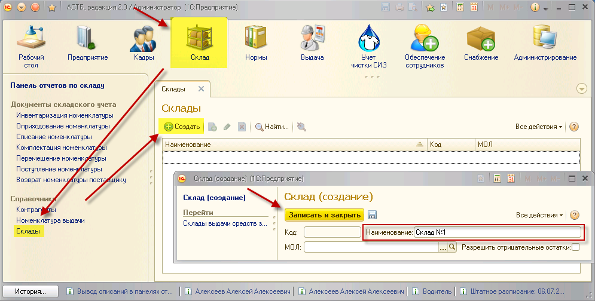

Справочник предназначен для создания складов для выдачи и хранения СИЗ. Каждый сотрудник должен быть привязан к складу для дальнейшего получения средств защиты.
Для создания склада, необходимо зайти в раздел «Склад», далее выбрать справочник «Склады», нажать кнопку «Создать», ввести название склада и нажать кнопку «Записать и закрыть».
